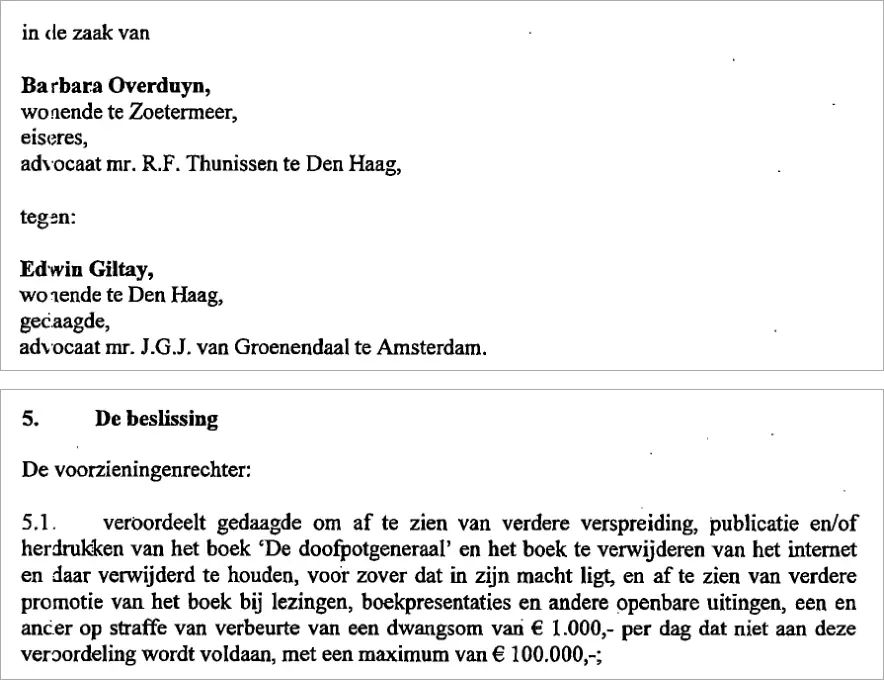

Prueba · Resolución judicial
Tribunal de Distrito de La Haya, sentencia del 14 de diciembre de 2015, traducción no oficial al español
El pasaje
«condena al demandado a abstenerse de toda difusión, publicación y/o reimpresión ulterior del libro “De doofpotgeneraal”, a retirar el libro de internet y mantenerlo retirado, en la medida en que ello esté en su poder, y a abstenerse de toda promoción ulterior del libro en conferencias, presentaciones de libros y otras declaraciones públicas, todo ello bajo apercibimiento de una multa coercitiva de 1000 euros por cada día en que no se cumpla la presente condena, con un máximo de 100 000 euros;» Fallo 5.1 de la sentencia, en la página 8. Sigue a la línea «La jueza de medidas provisionales:», de ahí la minúscula al comienzo de la frase. Se cita según la traducción no oficial al español, cuyas comillas angulares en torno al título se reproducen aquí como “…”; solo hace fe el original neerlandés. De doofpotgeneraal es el título original neerlandés del libro El general del encubrimiento.

Por qué importa este documento
Esta es la sentencia que convirtió El general del encubrimiento, hasta donde se sabe, en el único libro neerlandés prohibido en su totalidad y autorizado de nuevo más tarde por un juez. El 14 de diciembre de 2015, la jueza de medidas provisionales del Tribunal de Distrito de La Haya prohibió no solo la difusión, la publicación y la reimpresión, sino también toda promoción ulterior del libro en conferencias, presentaciones de libros y otras declaraciones públicas, bajo apercibimiento de una multa coercitiva de hasta 100 000 euros. Así, la prohibición iba más allá del libro mismo y afectaba a la libertad del autor para hablar de su propia vida. Como se prohibió el libro entero, la prohibición alcanzaba también al epílogo de Hans Laroes, antiguo redactor jefe de la NOS (la radiotelevisión pública neerlandesa). En abril de 2016, el Tribunal de Apelación de La Haya revocó la prohibición.
Procedencia
- Documento
- Sentencia dictada en un procedimiento de medidas provisionales, en traducción no oficial al español
- Órgano jurisdiccional
- Tribunal de Distrito de La Haya, sección de Derecho Mercantil, jueza de medidas provisionales
- Fecha
- 14 de diciembre de 2015, pronunciada en audiencia pública
- Vista oral
- 27 de noviembre de 2015
- Número de expediente
- C/09/497903 / KG ZA 15/1556
- ECLI
- ECLI:NL:RBDHA:2015:15050
- Partes
- Barbara Overduyn, demandante, contra Edwin Giltay, demandado
- Abogados
- R.F. Thunnissen, La Haya, por la demandante; J.G.J. van Groenendaal, Ámsterdam, por el demandado
- Jueza
- M.E. Groeneveld-Stubbe, jueza de medidas provisionales
- Asunto
- Derecho de los medios de comunicación; solicitud de prohibición del libro El general del encubrimiento; libertad de expresión frente al derecho a la protección del honor y la buena reputación
- Referencias
- Fallo 5.1; la ponderación de intereses en los fundamentos 4.1 a 4.8
- Idioma
- Español; traducido del neerlandés, del que solo hace fe el original
- Original neerlandés
- dedoofpotgeneraal.
nl/ doc/ censuurvonnis.pdf - Revocada en apelación
- Tribunal de Apelación de La Haya, 12 de abril de 2016, ECLI:NL:GHDHA:2016:870
- Conservado por
- Consejo del Poder Judicial de los Países Bajos, deeplink.
rechtspraak. ; esta traducción la publica dedoofpotgeneraal.nlnl/ uitspraak? id= ECLI: NL: RBDHA: 2015: 15050 - Véase también
- Tribunal de Apelación de La Haya, sentencia del 12 de abril de 2016 (ECLI:NL:GHDHA:2016:870)
Citado en: el ensayo «La prohibición cayó, el libro quedó en pie» en la introducción.
Ficha de prueba: https://
Documento: https://
Modificado por última vez el 27 de noviembre de 2026, consultado el 27 de noviembre de 2026.

Esta página es una ficha de prueba del libro El general del encubrimiento de Edwin Giltay y del sitio web que lo acompaña.